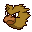
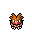
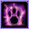
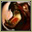
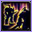
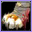
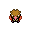

Pokédex / #021

Spearow #021
NormalFlying
It busily flits around here and there. Even if it is frail, it can be a tough foe that uses MIRROR MOVE.
Generation 1 · Kanto

Stats
| Attack | 60 | |
|---|---|---|
| Defense | 30 | |
| Sp. Atk | 31 | |
| Sp. Def | 31 |
In the wild
| Wild level | 5–15 |
|---|---|
| HP | 40 |
| Experience | 7 |
| Egg groups | Flying |
Evolution
- Evolves into Fearow at level 20.
Moves
| Level | Move | Type | Category | Power | Energy | Cooldown | Effect | |
|---|---|---|---|---|---|---|---|---|
| 1 | Tackle | Normal | Physical | 15 | 15 | 1s | Tackle is one of the most common and basic moves a Pokemon learns. It deals damage with no additional effects. | |
| 1 |  | Peck | Flying | Physical | 35 | 35 | 6s | Peck inflicts damage and has no secondary effect. |
| 1 | Growl | Normal | Status | – | 60 | 60s | The user growls in a cute way, making the foe lower its ATTACK. stat. | |
| 8 | Pursuit | Dark | Physical | 40 | 40 | 6s | Pursuit deals damage and has no secondary effect. | |
| 11 |  | Fury Attack | Normal | Physical | 15 | 45 | 9s | Fury Attack does damage, hitting 2-5 times per use. |
| 15 | Aerial Ace | Flying | Physical | 60 | 60 | 14s | Aerial Ace deals damage and ignores changes to the Accuracy and Evasion stats. | |
| 18 |  | Mirror Move | Flying | Status | – | 130 | 25s | Mirror Move copies the target's last move. If there isn't a last move, copy random. |
| 22 | Assurance | Dark | Physical | 60 | 70 | 13s | Assurance does damage and has no secondary effect. | |
| 25 | Agility | Normal | Status | – | 80 | 20s | Agility raises the user's Speed by two stages. | |
| 29 | Focus Energy | Normal | Status | – | 70 | 60s | Increases Critical-Hit ratio by 50%. | |
| 32 | Roost | Flying | Status | – | 90 | 120s | User recovers half of its max HP. Flying types temporarily lose Ground type immunity. | |
| 36 |  | Drill Peck | Flying | Physical | 80 | 80 | 12s | Drill Peck inflicts damage and has no secondary effect. |
Field abilities
Find
Special abilities
Keen Eye
Egg moves
AstonishFeather DanceFaint AttackQuick AttackRazor WindScary FaceSky AttackSteel WingTri AttackUproarWhirlwind
Technical machines
Aerial AceBideDouble EdgeDouble TeamMimicMud SlapRageRain DanceRazor WindRestSky AttackSteel WingSubstituteSwiftTake DownToxicWhirlwind
Drops
| Item | Amount | Chance | |
|---|---|---|---|
| bunch of wheat | 1–3 | 66.7% | |
| feather | 1 | 29.6% | |
| downy feather | 1 | 13.3% | |
| red apple | 1–3 | 5% | |
 | spearow doll | 1 | 0.1% |
Other forms
Christmas Spearow